K562 Activating DNase matched - State 20:ReprD (n=12)
K562 Activating DNase matched - State 20:ReprD (n=12)
[
See group descriptions
]
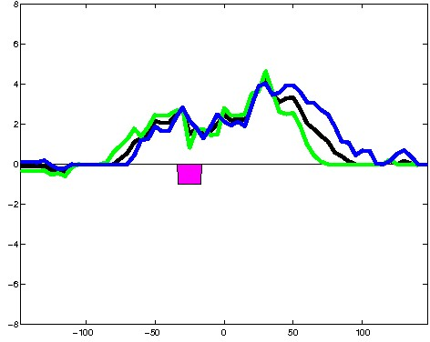
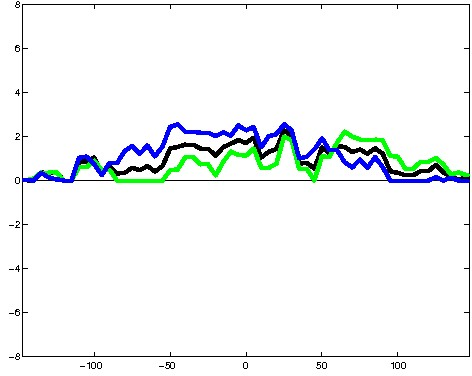
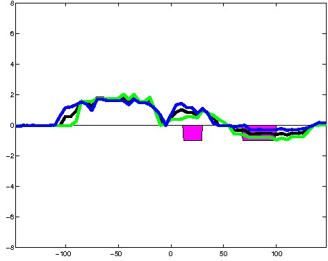
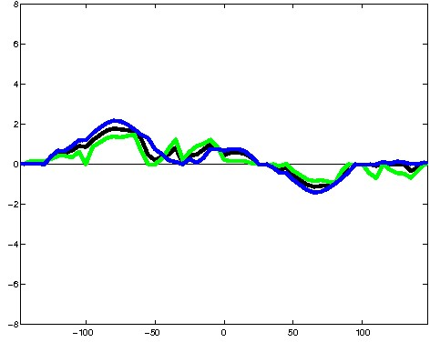
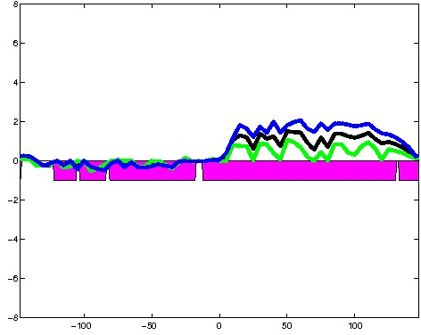
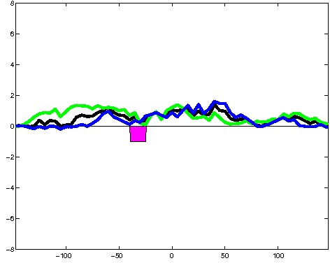
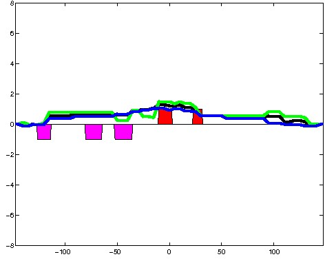
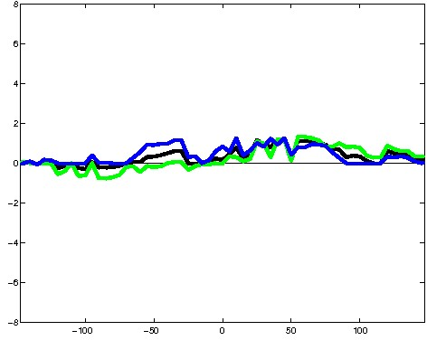
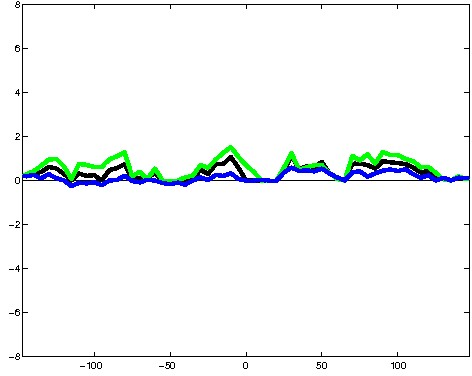
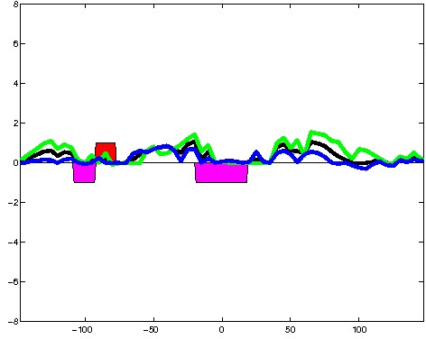
; picked in K562 (state 20:ReprD, DNase); matched; chr17:64,974,609-64,974,903 (295bp)") 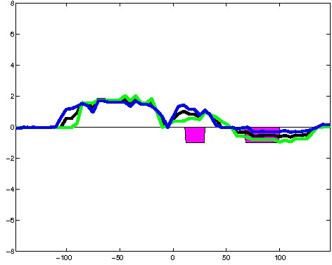
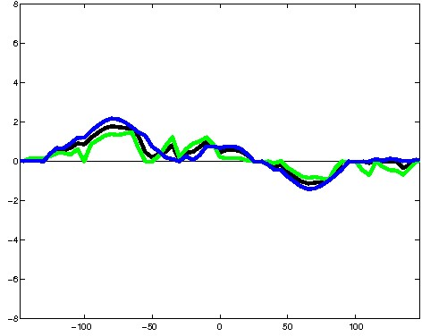
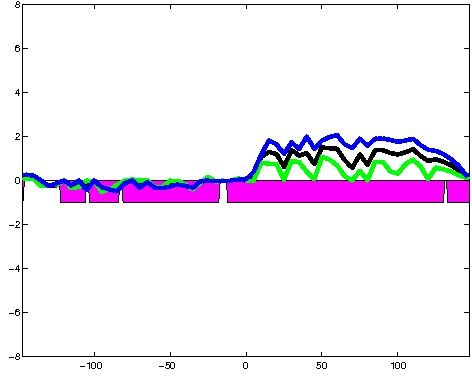
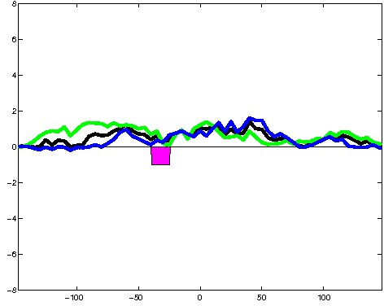
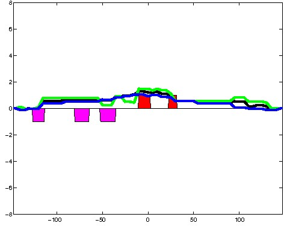
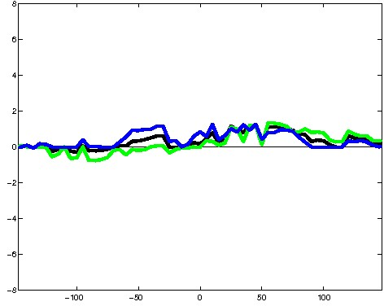
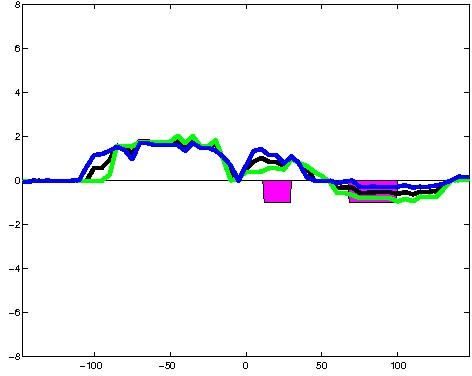
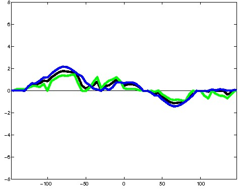
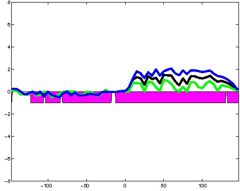
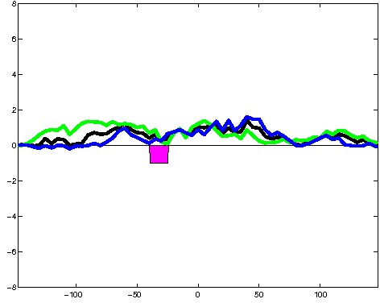
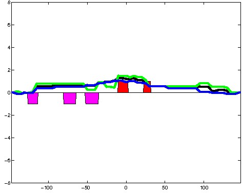
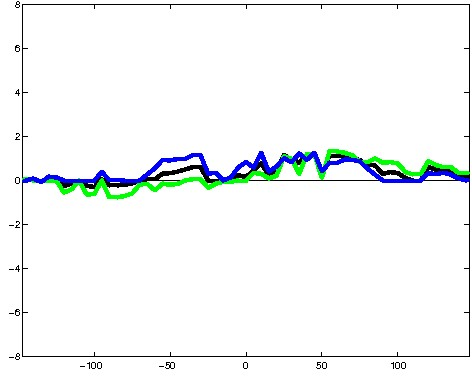
; picked in K562 (state 20:ReprD, DNase); matched; chr3:24,061,029-24,061,323 (295bp)") 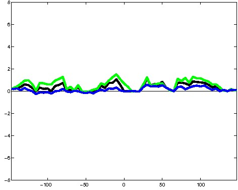
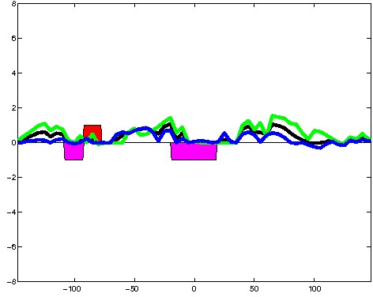
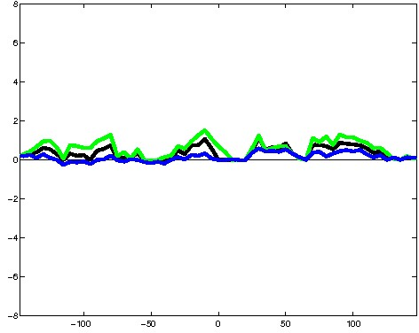
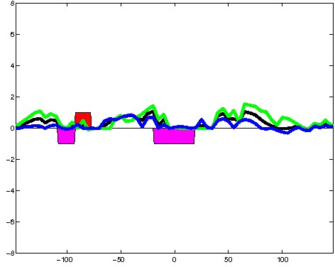